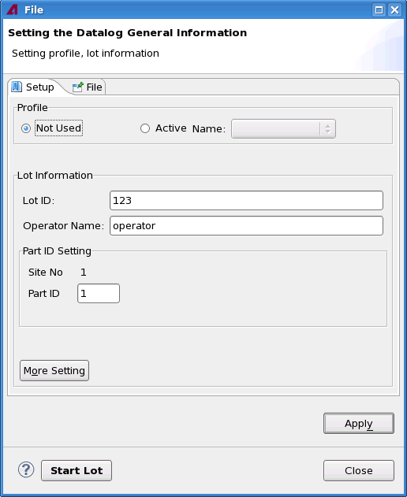

Setting the data log general information in the Datalog Control tool
About this task
The general information includes the data log profile and the lot information to be logged. This is done in the Setup tab of the Datalog Control tool.

Before you begin
Make sure the Datalog Control tool is started.
Procedure
Results
The data log general settings are changed.
Functional changes
- Introduced in SmarTest 7.2.0